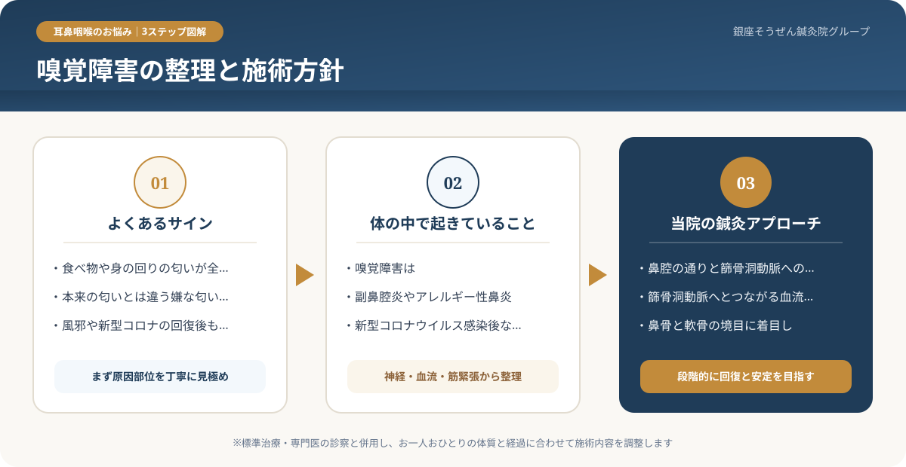

嗅覚障害の鍼灸
匂いが弱い・わからない・違って感じる嗅覚障害に対し、鼻の奥の血流を促し嗅細胞の再生を支える鍼灸を行います。
まず知っておきたい要点と改善の流れ

嗅覚障害は、副鼻腔炎やアレルギー性鼻炎、風邪・新型コロナウイルス感染後などが約8割を占め、鼻粘膜の腫れで匂い分子が届かない気導性や、嗅繊毛・嗅神経が傷つく嗅神経性、脳に関わる中枢性に分けられます。嗅細胞は約40日周期で生まれ変わる高い再生能力を持っていますが、鼻の奥の血流低下や炎症、全身の疲労などが重なると回復が停滞しやすくなります。耳鼻咽喉科での評価や点鼻薬・内服と並行した早めのケアが大切です。
このようなお悩みはありませんか？
- ✓食べ物や身の回りの匂いが全くわからない、または薄く感じる
- ✓本来の匂いとは違う嫌な匂いに感じてしまう
- ✓風邪や新型コロナの回復後も嗅覚が戻らず不安が続いている
- ✓匂いがわからないせいで食事の風味や味が楽しめない
当院の施術アプローチ・改善の流れ
なぜ鍼灸で改善へ向かうのか？（作用機序の図解）
嗅覚障害に対する鍼灸は、耳周囲・頸部の微小循環改善と聴覚・粘膜調整機序を通じて、お体本来の回復力を引き出します。

翳風・風池・合谷など、耳鼻咽喉領域の神経・血管と連動する経穴へ繊細にアプローチします。
首・顎まわりの深層筋緊張を緩め、内耳や粘膜周囲の滞った血流とリンパ循環を促します。
ストレスや睡眠不足で高ぶった交感神経を鎮め、音への過敏反応や粘膜の過剰反応を和らげます。
標準治療を妨げない設計で、生活支障度（THI等）の軽減と再発しにくい体調づくりを支えます。
院長YouTube解説・関連動画
新型コロナウイルス後遺症と嗅覚障害
嗅覚障害を起こす病気は様々あります。副鼻腔炎の他に風邪や鼻アレルギー、頭部外傷、鼻内形態異常、中枢神経疾患があり、外部からの金属化合物、有機化合物を吸入して起こる場合や、 抗ガン剤などの薬物による影響もあります。
このうち約80％が副鼻腔炎、風邪、鼻アレルギーです。また、近年では新型コロナウイルスが原因で嗅覚障害を発症することも非常に多いです。
においを感じる嗅粘膜には、通常の粘膜とは違う、嗅神経という神経の先が嗅繊毛という非常に細く短い毛になって直接、外に飛び出しています。実際皮膚に触れていなくとも、体毛に何かが触れると分かるように、ニオイもその細く短い毛が感知しているのです。
嗅繊毛は粘液に覆われていて、 においの素である無機物や有機物の分子のうち、空気に乗って飛んでくるものが粘液に溶け込み、 嗅繊毛の先にある嗅覚受容体に結合し、刺激された受容体からの電気信号が嗅神経を通って大脳に伝わることで「におい」を感じます。ここでなんらかの障害が起こると嗅覚障害になります。
刺激される受容体からの信号のパターンや強度の組み合わせによって感知されます。受容体の数は、ヒトではなんと約400種類。 それにより様々なにおいを嗅ぎ分けることができるのです。
鼻の問題:鼻のポリープ、アレルギー性鼻炎、慢性副鼻腔炎など、鼻の病気が嗅覚障害を引き起こすことがあります。
脳の損傷または病気:脳震盪、脳腫瘍、アルツハイマー病、パーキンソン病など、脳の損傷や神経変性疾患が原因で嗅覚障害が生じることがあります。
化学物質への曝露:一部の化学物質への過度の曝露が、嗅覚細胞を損傷し、嗅覚障害を引き起こすことがあります。
薬剤の副作用:一部の薬剤は嗅覚障害を副作用として引き起こすことがあります。
年齢の影響:加齢により嗅覚機能が自然に衰えることがあります。
嗅覚障害が改善する人と改善しない人の症状
嗅覚の減退:通常感じることができる臭いが弱く感じられるか、まったく感じられなくなることがあります。
嗅覚の喪失:全く臭いを感じることができなくなります。これは一時的または永続的な症状になることがあります。
歪嗅症:実際の臭いとは異なる、歪んだ臭いを感じることがあります。
幻嗅症:実際には存在しない臭いを感じることがあります。
味覚の変化:嗅覚は味覚と密接に関連しているため、嗅覚障害は食べ物の味を感じる能力にも影響を及ぼすことがあります。
嗅覚障害のアプローチ
点鼻ステロイド薬:フルチカゾン、モメタゾン、ブデソニド、リンデロンなど。
鼻の粘膜の腫れを減少させ、炎症を和らげる効果があります。
経口抗ヒスタミン薬:セチリジン、ロラタジン、フェキソフェナジンなど。
アレルギー症状を軽減し、鼻水やくしゃみを抑える効果があります。
抗生物質:副鼻腔炎が細菌感染によるものである場合、アモキシシリンやドキシサイクリンなどの抗生物質が処方されることがあります。
点鼻脱感作薬:アレルギー性鼻炎に対して、特定のアレルゲンに対する点鼻脱感作薬が使用されることがあります。
漢方薬:当帰芍薬散
当帰芍薬散がステロイド点鼻による改善方法と比較すると、感冒後嗅覚障害に対する改善率が高いことや原因不明の嗅覚障害に対しても有効である可能性があると言われています。
ビタミンB12:メチコバール
神経の修復を助ける目的で、ビタミンB群のサプリメントが推奨されることがあります。
他にも、複数のアロマで嗅覚を刺激する嗅覚刺激法を自宅で行うこともあります。
上記の方法で、6〜８割の人は回復すると言われています。それでも改善しない人が鍼灸を頼って当院に来院されます。
耳鼻科の先生は嗅覚障害が改善する施術はしていません。嗅覚障害の回復は自然回復のみだからです。
現在はIPS細胞を使った改善方法もありますが、まだ実用化されていません。病院ではビタミンB12、点鼻薬、Bスポット、抗うつ剤、亜鉛、血流をよくする薬、筋弛緩剤などを使って改善していきます。
医師は改善方法がないと言えないところがあります。そのため、医師からの観点で見てみると仕方がないことで、鼻の炎症を取ることと鼻の神経を回復させるためにメチコバールや点鼻薬を処方します。
今の薬で嗅覚障害が改善すると思わない方が良いでしょう。
最も多い嗅覚障害の原因は、嗅細胞にある嗅上皮の機能不全です。嗅上皮は鼻の奥深くにあり、眉間の奥に位置しています。匂いの分子が空気によって流れ、鼻を通る時、嗅細胞に届かないと嗅覚障害が発生します。
多くの場合は鼻の粘膜が腫れて嗅細胞まで空気が通らないで起こります。呼吸性嗅覚障害と言われており、中には鼻詰まりのような症状で悩んでいる人もいます。
鍼灸による嗅覚障害の改善
嗅覚障害に対して鍼灸で狙うのは、嗅細胞の再生です。新型コロナウイルスによって鼻の粘膜で炎症が大きい場合は、匂いを感知する嗅繊毛や嗅細胞がボロボロになっている人が多いです。
そのため、嗅細胞の再生を狙うことが大事です。嗅細胞の再生を図るために恥骨動動脈を刺激して血流を促して栄養を送って再生を促すという手法を行います。主に、眼動脈と篩骨洞動脈を狙ってアプローチを行います。
コロナやインフルエンザ、風邪によって匂いがしなくなる人はたくさんいます。７割の人は自然に回復しますが、３割の人は時間が経っても嗅覚が戻りません。それは嗅繊毛という細胞が再生し切っていないからです。嗅繊毛が再生すると匂いの感覚が戻ってきます。
そのためにオススメの鍼を入れるポイントがあります。1つ目は印堂というツボです。ここに３cm鍼を入れましょう。
2つ目は鼻骨と軟骨の間の境目です。ここに鍼を入れます。これによって鼻に栄養を送る篩骨動脈が刺激されて嗅繊毛の再生が促され、匂いの感覚が戻るためおすすめです。
当院では、ウイルスが嗅細胞に直接感染しているケースと神経性嗅覚障害といいウイルスが嗅上皮で活性化し免疫を破壊しているケースが多いです。
特に1番多いのは新型コロナウイルスによる嗅覚障害で風邪やインフルエンザなどで起こる感冒後嗅覚障害とも似ています。風邪の症状が改善した後も匂いを感じられないケースは、ウイルスによる神経の毒性によって傷つけられて起こる嗅覚障害もよくあります。この嗅細胞は嗅神経の末端に位置しており、他の脳神経細胞とは違って再生能力が非常に高いです。
そのため神経性嗅覚障害に関しては必ずしも改善しないわけではなく多くのケースで完全回復、改善が見込めます。
全て自己回復能力が基本になっていて改善までに1年〜数年かかることが多いです。これは、再生された神経細胞が元の機能を取り戻すまでが時間がかかってしまうためです。
嗅細胞は約40日サイクルで新しい細胞に生まれ変わります。嗅覚障害の人は嗅覚刺激法が非常に大事です。朝晩３０秒ずつ３種類の匂いを１０秒間嗅ぐ方法です。
刺激を与えて嗅細胞の再生を促進させます。その観点を応用した改善方法が鍼灸です。嗅細胞が再生するにあたって栄養が必要なため、その栄養を送る篩骨洞動脈に刺激を与え、なおかつその周辺に刺激を与えることによって、この嗅細胞の再生を促すことが嗅覚障害のアプローチなのです。
①排泄物の匂いを感じることがどうか
コロナウイルスによる嗅覚障害では臭い匂いを感じることができないことがほとんどです。感じることができても、全然違う匂いとして感じる人が多いです。そのため、トイレに入った時の自分の排泄物の匂いを嗅いでもらいます。
※排便の匂いは回復のバロメーターと考えましょう。排便の匂いが嗅げることがゴールではなく、嗅ぐことができれば他の匂いも一緒に回復していきます。
②炊き立てのご飯の匂いを感じることができるかどうか
炊き立てのご飯の匂いが感じることができるようになれば、そのあとは自分の力で回復することができます。
🎥 他のYouTube切り抜き・解説を読む（あと2件）▼
嗅覚障害は何回ほど通えば改善が見られるのか？
当院での改善では、嗅覚障害は１〜3回の来院で改善します。人によりますが、単純な嗅覚障害であれば１〜3回でケリがつきます。そのくらい嗅覚障害は改善するしないがはっきりしています。当院でも6回通って改善した人もいれば、4回で調子が良くなってきている人もいます。
・1回目の施術
当院を出たら匂いが感じられるようになった。しかし、翌日また感じなくなった。これは非常に良いことです。
感覚の症状は１度良くなると良くなったところが基準点になり、元に戻った時の差で悩まれることが多いですが、良くなった場所までは必ず良くなります。
・2回目の施術
今まで感じることができなかったカレーの匂いや部屋の匂いを感じられるようになった。排泄物の匂いはまだ薄いけれど、他の匂いを感じられるようになり始めた。
3回以上かかってしまう可能性もありますが、臭い匂いをはっきり嗅ぐことができるようになれば鍼灸と時間によって改善します。
・3回目の施術
排泄物を臭いと感じられるようになった。皮の匂いやゴムの匂いが違う匂いに感じてしまうことがある点に不安を感じる。
ベースは安定しています。何度か施術を行うことで不安点も解消できます。
ほとんどの方が上記のような改善の仕方をしています。回復能力には個人差があるため、Bスポットなどですぐに改善したという人がいても焦る必要はありません。正しい手順を踏めば嗅覚障害は改善します。
初めての来院から2年後に改善したケース
2021年2月18日初めて来院され、嗅覚障害の施術を行いましたが全く改善が見られませんでした。６回ほど施術を行っても全く嗅覚が戻りませんでしたが、施術をすることで体がすごく楽になって生活しやすくなったためメンテナンスで月１で来院していました。
初めて来院してから2年後の2023年9月、嗅覚が戻ってきました。お弁当の三つ葉の匂いがわかるまでに嗅覚が戻ってきたのです。その時の体は非常に良い状態で、悩んでいた五十肩、足のむくみ、血流障害も全て改善した上で生活をしていたら嗅覚が戻ってきました。
嗅覚障害は、嗅細胞、嗅繊毛の再生が大事なため、諦めることはないと実感しました。正直、私自身は改善しないタイプであると判断していましたが、嗅覚は戻ってきました。体のメンテナンスと並行して嗅覚への施術も行っていましたが、2年経っても再生することもあるのです。
このことから、体は全てが相互作用で動いているため全ての症状を改善する必要があるということがわかりました。
今現在嗅覚障害で来院する人の半数が無臭症で全く匂いがしない症状です。そういう人の中でも嗅覚を取り戻す人もいます。副鼻腔炎の手術後で全然匂いがしなくなったという人でも戻りそうな感覚を得ている人もいます。
嗅細胞の再生力を上げる状況を作り出すために鍼灸は非常にお勧めの方法です。
匂いが薄い、匂いがしない、再生途中の人も見ているとみんな回復が止まってしまっています。回復のフックが取り切れていないためです。当院では、このフックを取るようなアプローチを行っています。
鍼灸による嗅覚障害へのアプローチ
嗅覚障害は気導系、嗅神経系、中枢性系という3部構成で分かれており、鍼灸で狙えることは2つあります。鼻の通りの問題と嗅神経の再生です。これを狙ってアプローチしていきます。
具体的にはアレルギー性鼻炎や慢性副鼻腔炎など鼻の炎症がある場合は、鍼で鼻腔の通りを良くしてあげるというアプローチを行います。
症状に関しては耳鼻科の先生が対応してくれることが多いです。耳鼻科では、ステロイドを打つことで鼻腔を開かせるなどの対応をしてくれます。
鼻茸という鼻のポリープがあると物理的にも鼻が通らないため、鍼では鼻のアレルギー性の炎症を取ったり嗅神経の再生を行ったりします。
嗅神経の再生を促すには嗅神経に栄養を送っている循環の回復が必要不可欠なのです。嗅神経細胞に栄養を送っている血管を篩骨洞動脈といいます。内頸動脈というものがあり、頚椎の3番目の方から分枝して眼動脈という眼の方に行く血管になり、眼動脈から篩骨洞動脈になります。
鍼灸での狙い方は内頸動脈も狙って眼動脈も狙って篩骨洞動脈も狙うことです。流れに沿ってアプローチをして、神経の方に栄養を送れるようにアプローチするのです。亜鉛やビタミンB12をとって欲しいというアドバイスもします。
鍼灸としてできることは鼻に行く血流を良くして嗅神経の再生を促すことです。嗅覚はタイムリミットが決まっています。匂いが感じなくなってから3ヶ月以内に何かしらアプローチをしなければいけません。ぜひ鍼灸で嗅細胞の再生をしてみることをお勧めします。
セルフケア
・篩骨洞動脈
鼻の奥にある血管のため無理はしない程度に軟骨と尾根の間をなぞりましょう。強い力でなくて良いですが、鼻の間が真っ赤になるくらい押してください。篩骨洞動脈に刺激を与えることで、鼻の奥の血流をよくすることができ改善に近づきます。
・軟骨と鼻骨の境目
真っ赤になるくらいぐりぐりと刺激しましょう。皮膚の毛細血管が拡張するくらい押すことが大事です。
点鼻薬は使って良いです。薬と併用してセルフケアを行い、刺激をすることを続けてください。
線維筋痛症・慢性疲労症候群の全身鎮痛ツボ図解
実際の施術ではお一人おひとりの体質・症状に合わせて選穴しますが、線維筋痛症・筋痛性脳脊髄炎/慢性疲労症候群（ME/CFS）の中枢鎮静ケアの臨床でよく用いられる代表的なツボの目安です。

📌 代表的なツボの詳細一覧表を開く（6穴） ▼
| ツボ名 | 位置の目安 | 主な狙い | セルフケアの注意点 |
|---|---|---|---|
| 百会（ひゃくえ） | 頭頂部の中央 | 中枢性感作（脳の痛み過敏）と睡眠障害の鎮静 | 触れるだけの極低刺激から始めます。 |
| 印堂（いんどう） | 左右の眉間の真ん中 | 自律神経の過覚醒・ブレインフォグ・不安感の緩和 | 目を閉じてゆっくり呼吸しながら軽く触れます。 |
| 内関（ないかん） | 手首の横ジワから指3本分肘寄りの中央 | 交感神経の高ぶり・動悸・吐き気の鎮静 | 労作後倦怠感（PEM）を起こさない穏やかな刺激にします。 |
| 合谷（ごうこく） | 手の甲、親指と人差し指の間 | 全身の疼痛閾値の安定化・頭頸部の緊張緩和 | 強い圧痛が出ない範囲で優しく押します。 |
| 足三里（あしさんり） | 膝の下外側、指4本分下 | 全身の回復力・消化吸収・自律神経の土台づくり | 体調の波に合わせて本数と時間を調整します。 |
| 太衝（たいしょう） | 足の甲、親指と人差し指の骨の間 | 筋の過緊張とストレス反応の鎮静 | 痛みが強い部位を避け遠隔から整えます。 |
国際査読論文の科学的エビデンス
国際的な医学データベース（PubMed・Cochrane等）で報告されている線維筋痛症・筋痛性脳脊髄炎/慢性疲労症候群（ME/CFS）の中枢鎮静ケア領域の代表的な査読済み鍼灸研究をまとめています（標準治療との併用や研究上の限界を含めて正確に掲載）。
📚 査読論文データ・PubMed出典リンクを開く（4件） ▼
| 年・研究デザイン | 対象・規模 | 主な結果 | 限界・出典 |
|---|---|---|---|
| 2013年 大規模多施設RCT | 季節性アレルギー性鼻炎 422名（ドイツ） | 7〜8週のRQLQ QOLがシャム比0.5点・薬単独比0.7点改善（P<0.001）、頓用薬使用も有意減少（P<0.001）。 | 1年目16週では群間差消失、臨床的意義は慎重評価。 Ann Intern Med (PMID: 23420231) |
| 2021年 メタ解析 | 耳鳴り 8 RCTs（n=504） | 生活支障度THI（MD -10.11, p<0.001）・TSI（MD -8.36, p<0.001）が有意改善。VASは有意差なし（p=0.06）。 | 組入れRCTの質・サンプル規模に限界あり。 Acupunct Med (PMID: 32772848) |
| 2026年 ネットワークメタ解析 | 突発性難聴 36研究（n=3,360・標準治療併用） | ステロイド等の標準治療への鍼灸併用で総有効率RR 1.19（p<0.0001）、3週間コースが推奨。 | エビデンス確実性は低く標準治療（早期ステロイド）併用が前提。 Complement Ther Med (PMID: 42918509) |
| 2023年 メタ解析 | 成人顎関節症 22 RCTs統合（n=471） | 標準治療併用で有効率RR 1.36・疼痛VAS MD -1.23と有意改善。 | GRADE確実性は低〜非常に低、さらなる高品質RCTが必要。 Medicine (PMID: 37746950) |
参考文献・出典
- 2013年 大規模多施設RCT（季節性アレルギー性鼻炎 422名（ドイツ））— Ann Intern Med (PMID: 23420231)
- 2021年 メタ解析（耳鳴り 8 RCTs（n=504））— Acupunct Med (PMID: 32772848)
- 2026年 ネットワークメタ解析（突発性難聴 36研究（n=3,360・標準治療併用））— Complement Ther Med (PMID: 42918509)
- 2023年 メタ解析（成人顎関節症 22 RCTs統合（n=471））— Medicine (PMID: 37746950)
よくある質問（FAQ）
Q. 耳鼻科の点鼻薬や漢方薬を続けながら受けられますか？▼
Q. 発症から時間が経っていても相談できますか？▼
あわせて読まれる関連疾患（耳鼻咽喉のお悩み）
ある日突然片耳などが聞こえにくくなる感音難聴です。発症早期の耳鼻科ステロイド治療を最優先に、早期併用や回復期の耳鳴り・めまいをケアします。
実際には音がないのに耳の中で雑音が聞こえる状態です。耳の血流や自律神経・脳の過敏さを整えるケアで軽減を目指します。
実際の匂いが別物に感じられたり存在しない匂いを感じる嗅覚の質的障害です。耳鼻科での精査を前提に、鼻周囲と脳の過緊張の双方へアプローチします。
新型コロナ感染後に倦怠感・咳・嗅覚障害・ブレインフォグなどが長引く状態です。専門医受診を前提に回復力を支えます。
鼻や副鼻腔の慢性炎症で粘膜がきのこ状に腫れて垂れ下がる状態です。耳鼻科治療を基本に鼻周囲の巡りと不快感をケアします。
両側の鼻茸や嗅覚障害を繰り返しやすい指定難病の慢性副鼻腔炎です。専門医の管理を最優先に安定期の体調を支えます。
CLINICAL RECOVERY CASES
✨ 実際の臨床改善事例・回復経過を見る
銀座本院をはじめ各院での実際の改善事例を症状別に絞り込んでご確認いただけます。
おひとりで悩まず、まずはご相談ください
銀座本院・川口・大宮・横浜・博多・田無の各院でご予約を承っております。